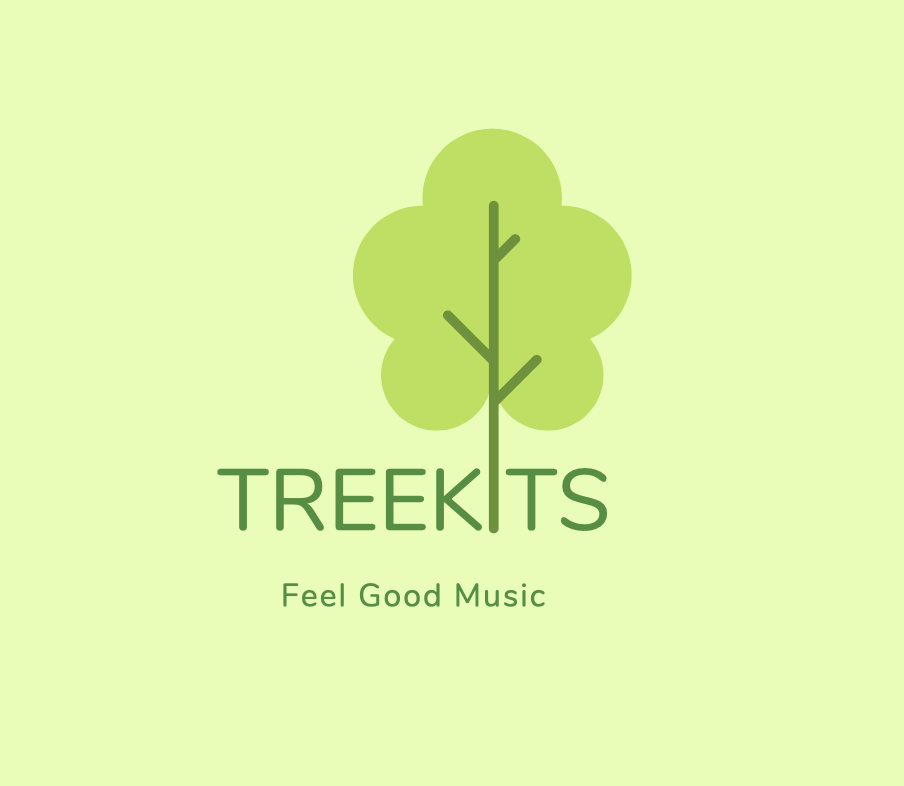

I created an audio documentary for the Greater Manchester Walking Football League that demonstrates the effect the game has had on the lives of the elderly and retired community. I was responsible for the entire project and worked with several different teams that had travelled miles to be part of the Walking Football tournament. The video was published on the Manchester Walking Football website and shared on a national level in Walking Football forums by organisers of the league.
I worked as a production assistant on a music video for a new band called Kill The Lights in Liverpool. The band had never released any music at this point, and this was the first media asset they released to their fans. As a production assistant I was responsible for managing the lighting, helping to compose sets and different shots and organising the band.
I worked as a production assistant with Video Ink on a music video for Bokassa, a Norwegian Rock/Metal band. This involved working to strict schedules with the shot list, as Bokassa were currently on tour with Metallica at the time on a European tour, meaning we had to get 3 music videos wrapped in a week for the band. I worked closely with the band and cast members that were used for the outside scenes in the video.
I worked as a production assistant at Video Ink with Bokassa at Antwerp Mansion to help produce their Captain Cold One music video. This involved working with a crew and cast of around 50 – 60 people, many of whom had never been involved in a music video before. This meant I was responsible for a lot of the organisation as we had members of the public and actors arriving for the music video at a variety of different times across the day.
Discover Manchester is a guide to eating and drinking out in Manchester, it was the first website I ever developed. I was responsible for the design and code of the website, while the rest of my group focused on content generation. We participated in user research and user testing sessions to help us design the information architecture of the site and to establish the type of content that needed to be produced. Creating the site was a big learning experience for me. It made me think about responsive design and if what I was creating could really be used on any device. I’m currently working on improving the site to build in a drop down navigation to improve the information architecture of the website.
I am currently taking a ‘mobile first’ approach to developing my own business website Small Animal Boarding Sheffield. The website is aimed to help grow my business and increase my online presence. Currently the only way of finding the website online is through FindPetBoarding.com You can have a look at the current state of the website, which I aim to complete by January 2020. The site will use a small amount of Java-Script in order to create a slideshow of images and texts to display over 20 of my customer reviews to potential new customers.
Treekits is a project I have led with my user experience design group, the group adopted a user-centric approach to design that focused on user research and iterative testing of our Clickable Prototype. The group developed a prototype of an app that helped to reduce the overall impact that concerts and festivals have on the environment. My UX Report (5MB PDF) shows the wide range of UX techniques that were crucial to the success of the project such as: User Journeys, Personas and Wireframes and Storyboards all of which influenced our design decisions.
Study Mind was a project I ran with my group to produce a series of mental health videos for students at the University. The group worked using an agile methodology to undertake user research, prototype and then develop six 1-minute video’s that were published on Instagram. We worked with users throughout the process to ensure we we’re creating assets that were truly valuable to the target audience. I have made available the Product Development Document for the project.